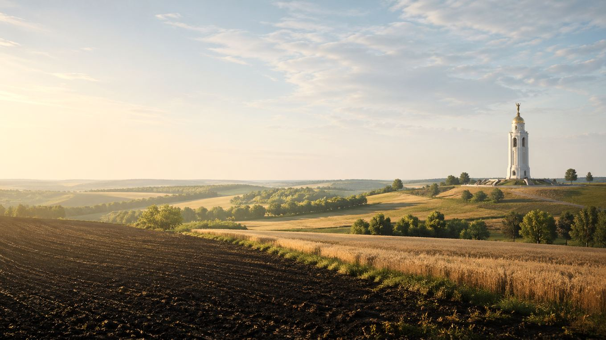

Главная / Белгородская область / северная лесостепь

Белгородская область · северная лесостепь
Что посадить в северной лесостепи
Здесь собраны культуры для сада и огорода в северной лесостепи Белгородской области: что обычно приживается уверенно, что требует внимания, а что лучше считать экспериментом.
Культуры и рекомендации
По умолчанию культуры отсортированы по надёжности: сначала надёжные, затем рекомендованные, с укрытием и рискованные. Сроки посадки ориентировочные: их стоит уточнять по погоде конкретного сезона.
| Культура | Категория | Рекомендация | Где лучше | Сроки | Комментарий |
|---|---|---|---|---|---|
| Гороховощная бобовая культура | Овощи | Надежно | Открытый грунт | Посев: апрель–май, как только почва готова к обработке. | Хорошо стартует ранним посевом; важно не пересушивать почву в период цветения и налива стручков. |
| Кабачоктыквенная культура | Овощи | Надежно | Открытый грунт | Посев / высадка рассады: конец мая — начало июня. | Одна из самых беспроблемных культур для зоны; важны тёплая почва и регулярный сбор плодов. |
| Капуста белокочаннаяовощная культура | Овощи | Надежно | Открытый грунт | Рассада: март–апрель; высадка: апрель–май по сроку сорта. | Хорошо растёт на плодородных почвах при стабильном поливе; важно следить за крестоцветной блошкой и гусеницами. |
| Картофелькорнеплод / клубнеплод | Овощи | Надежно | Открытый грунт | Посадка: конец апреля — май, после прогрева почвы. | Надёжная базовая культура для региона; лучшие результаты — на рыхлых участках с окучиванием и профилактикой фитофторы. |
| Лук репчатыйовощная культура | Овощи | Надежно | Открытый грунт | Севок: апрель–май; уборка: июль–август после полегания пера. | Стабильная культура для чернозёмной зоны; важны рыхлая грядка и умеренный полив без переувлажнения. |
| Малинаягодный кустарник | Ягоды | Надежно | Сад | Посадка: апрель или сентябрь; нормировка побегов — весна / лето. | Хорошо зимует и плодоносит, если поддерживать влажность и не загущать посадки. |
| Морковькорнеплод | Овощи | Надежно | Открытый грунт | Посев: апрель–май; возможен подзимний посев в октябре. | Отлично подходит для зоны, особенно на лёгких грядах без свежего навоза и с равномерной влажностью. |
| Свёкла столоваякорнеплод | Овощи | Надежно | Открытый грунт | Посев: май, когда почва прогреется и минует сильный холод. | Стабильно удаётся на плодородных почвах; любит солнечные грядки и регулярный полив без перелива. |
| Смородина чёрнаяягодный кустарник | Ягоды | Надежно | Сад | Посадка: апрель или сентябрь; омолаживающая обрезка — весной. | Один из самых надёжных ягодников для зоны; важно омоложение кустов и достаточная влажность почвы. |
| Тыкватыквенная культура | Овощи | Надежно | Открытый грунт | Посев / высадка: конец мая — начало июня. | Хорошо растёт на тёплых, питательных грядах; важно дать достаточно места и не переохлаждать всходы. |
| Чесноковощная культура | Овощи | Надежно | Открытый грунт | Озимый: сентябрь–октябрь; яровой: апрель. | Озимый чеснок особенно стабилен в регионе; на плодородной почве формирует ровные крупные головки. |
| Яблоняплодовое дерево | Плодовые | Надежно | Сад | Саженцы: апрель или сентябрь–октябрь; формировка — ранняя весна. | Одна из самых удачных культур для региона; важно выбрать районированные сорта и формировать крону. |
| Вишняплодовое дерево | Плодовые | Рекомендовано | Сад | Саженцы: апрель или сентябрь; санитарная обрезка — ранняя весна. | Удаётся стабильно, особенно на солнечных местах с хорошим проветриванием и без застоя влаги. |
| Земляника садоваяягодная культура | Ягоды | Рекомендовано | Открытый грунт | Посадка: апрель–май или август–сентябрь; мульча — с начала лета. | Даёт хороший урожай при мульчировании и поливе; зимой полезно лёгкое укрытие в бесснежные периоды. |
| Крыжовникягодный кустарник | Ягоды | Рекомендовано | Сад | Посадка: апрель или сентябрь–октябрь; обрезка — ранняя весна. | Приживается хорошо, но требует проветриваемой формировки и контроля мучнистой росы. |
| Огурецовощная культура | Овощи | Рекомендовано | Открытый грунт / укрытие | Посев / высадка: май–июнь; ранний старт лучше под дугами. | Удаётся в открытом грунте после прогрева почвы; укрытие в начале сезона заметно повышает стабильность урожая. |
| Сливаплодовое дерево | Плодовые | Рекомендовано | Сад | Саженцы: апрель или сентябрь; формировка — ранняя весна. | Подходит для региона, если выбрать зимостойкие сорта и не размещать дерево в холодных низинах. |
| Томатовощная культура | Овощи | Рекомендовано | Открытый грунт / плёночное укрытие | Рассада: март; высадка: май–начало июня по погоде. | В регионе удаётся хорошо, но лучшие результаты обычно под временным укрытием или в теплице. |
| Фасольовощная бобовая культура | Овощи | Рекомендовано | Открытый грунт | Посев: май, только после устойчивого прогрева почвы. | Кустовые формы обычно удаются лучше; высевать стоит в хорошо прогретую почву. |
| Виноградягодная / плодовая культура | Плодовые | С укрытием / уходом | Сад, южная стена / шпалера | Посадка: апрель–май; укрытие лозы: поздняя осень. | Столовые формы лучше удаются в защищённых местах; на зиму часто требуется укрытие лозы. |
| Грушаплодовое дерево | Плодовые | С укрытием / уходом | Сад, защищённое место | Саженцы: апрель или сентябрь; молодые деревья лучше защищать на зиму. | Подходят зимостойкие сорта; в низинах и на продуваемых местах выше риск подмерзания и повреждения цветков. |
| Перец сладкийтеплолюбивый овощ | Овощи | С укрытием / уходом | Плёночное укрытие / тёплая гряда | Рассада: февраль–март; высадка: вторая половина мая. | Лучше чувствует себя под укрытием; в открытом грунте нужен тёплый участок и защита от холодных ночей. |
| Абрикосплодовое дерево | Плодовые | Рискованно | Сад, самое тёплое место | Саженцы: апрель или сентябрь; цветение требует защиты от заморозков. | Страдает от возвратных заморозков; лучше высаживать на защищённых участках и выбирать зимостойкие сорта. |
| Баклажантеплолюбивый овощ | Овощи | Рискованно | Теплица или надёжное укрытие | Рассада: февраль–март; высадка под укрытие: вторая половина мая. | В открытом грунте часто не успевает полностью реализовать потенциал; требуются тепло и регулярный уход. |
По текущим фильтрам ничего не найдено. Попробуйте изменить запрос или сбросить фильтры.